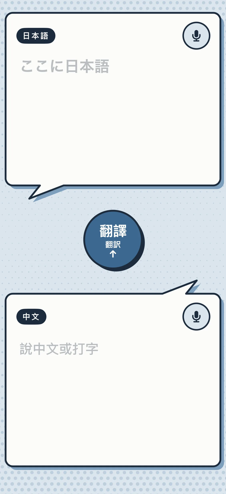

自製日語旅遊口譯 App：為什麼比較準

實際使用結果
- 很準：地名、人名、點餐、問路都對。
- 可以中英夾雜：講中文夾英文單字也聽得懂。
- 錄很長也沒關係：口頭禪、重複、講一半改口都會被整理掉，最後只留一句乾淨的話。
- 弱點是雜音：在吵的店裡、車站廣播旁邊，聽寫會錯或抓不到聲音。
這是作者一個人的使用感受。App 沒有留使用紀錄，所以旅途中沒有數字；下面的數字都是出國前一天的測試。
發現 1：聽寫和整理一次做完，比分兩段好
一般做法分兩段：先語音轉文字，再請 AI 清稿。這次把錄音直接丟給 Gemini，一次做完聽懂、去口頭禪、整理成短句。
跟我自建的兩段式語音輸入比較，9 題，以 Typeless 的結果當基準：
| 短句相似度 | 短句秒數 | 長句相似度 | 長句秒數 | |
|---|---|---|---|---|
| 兩段式（自建語音輸入） | 0.87 | 4.8 | 0.76 | 14.9 |
| 一次做完（Gemini 3.8 flash） | 0.84 | 3.5 | 0.82 | 5.9 |
句子越長，一次做完的優勢越大。代價是有時刪太多（例如整段「我覺得」被砍掉），偶爾出現同音錯字。旅遊情境本來就要短句，這個影響小。
發現 2：把行程寫進提示詞，是準的主因
提示詞裡放一段行程：哪天去哪、地名的日文寫法、幾個人、自駕、常見情境。AI 事先知道你要去哪裡，聽到相近的發音就不會亂猜。
測 50 句、各翻 2 次，100 次失敗 0 次，中位數 1.9 秒。円月島、奥之院、京セラドーム、関西空港第2ターミナル 這些地名全對。
我沒有接工作用的大辭典。出國用不到工作詞，放進去只會變慢。會被聽錯的主要是地名。
發現 3：語感要寫死，不然 AI 會自己加料
壓測：中翻日 30 句＋日翻中 10 句，各跑 3 次。120 次失敗 0 次，中位數 2.1 秒、最慢 3.8 秒。抓到兩種錯：
- 人名被音讀：「高偉鳴」被翻成「コウ・ウェイミン」。加上「人名照漢字寫」就修好。
- 意思被改：「沒電了」被翻成「快沒電」。加上「意思不增不減」。
還沒修好的小毛病：「加滿」會自己補「レギュラー」；「可以坐在一起嗎」被翻成「同じ席に」（應該是「一緒に」）。
發現 4：自己講的話要整理，對方講的話要照實
中文錄音是自己要說的話，請 AI 整理成乾淨的句子。日文錄音是店員說的話，請 AI 照實聽寫、不改寫。對方的話被 AI 改寫，你就聽不到他原本的意思。
發現 5：偶爾會卡住，要設逾時
120 次裡有 1 次請求卡了 40 秒沒有回應。在店員面前乾等很尷尬。加上逾時（翻譯 10 秒、聽寫 20 秒）並自動重送一次後，就沒再遇到。
畫面
- 一頁，iPhone 直式。上框日文、下框中文，都是漫畫對話框：粗黑框、圓角、錯位陰影，尾巴指向中間。
- 每框左上一個語言標籤，右上一顆麥克風：按一下開始錄，再按一下停止並送出。錄音中輕微脈動，開始和停止各震一下。框內也可以直接打字。
- 每框有喇叭鈕：用手機內建語音朗讀框內文字，離線、按下就念。
- 中間一顆大圓鈕「翻譯」，下面小字日文「翻訳」，日本人也看得懂。最後編輯哪一框，就從那一框翻到另一框，箭頭跟著變方向。
- 按下去陰影收進去、整顆往右下沉，有震動。翻譯中外圈轉載入環，翻完再震一下。
- 翻譯鈕 96pt、麥克風 44pt，在店員面前單手好按。背景是淡藍網點，上下濃、中間淡。
技術配方
| App | SwiftUI，iOS 17，只做 iPhone 直式；程式約 400 行 |
| 錄音 | AVAudioRecorder，m4a（AAC）、16 kHz、單聲道；音訊模式 .playAndRecord＋.spokenAudio |
| AI | Gemini gemini-3.8-flash，thinkingLevel: low；錄音 base64 放進 inline_data（audio/mp4） |
| 朗讀 | iPhone 內建 AVSpeechSynthesizer，挑已安裝品質最好的日文聲音 |
| 逾時 | 翻譯 10 秒、聽寫 20 秒；逾時自動重送一次（時間加倍） |
| 金鑰 | 自己的 Gemini 金鑰（Google AI Studio 申請）。不要寫進要公開的程式碼 |
四段提示詞
全部放在 system instruction。{行程} 換成你的行程。
這是一段在日本旅行時、要跟當地人說的話的中文錄音。聽寫成台灣繁體中文，並整理成禮貌、乾淨俐落的口語句子：去掉口頭禪、重複與贅字，先講要什麼、一句一件事，意思不增不減。只輸出整理後的句子。聽不到人聲就輸出空字串。地名照下面行程的寫法。{行程}這是一段日文錄音，通常是店員、服務人員或路人在跟旅客說話。照實聽寫成日文，加上自然標點。只輸出聽寫文字。聽不到人聲就輸出空字串。{行程}你是隨身口譯。把使用者的中文翻成日文，給店員、服務人員、路人看。語感：禮貌客氣的口語（です・ます體），不要書面語、不要過度敬語。邏輯乾淨俐落：先講要什麼，一句一件事，短句，對方一眼看懂。意思不增不減。人名照原本的漢字寫，地名用日本當地的寫法。只輸出日文譯文，不加解釋、不加讀音。{行程}你是隨身口譯。把日文翻成自然、簡潔的台灣繁體中文口語。地名寫中文慣用名。只輸出譯文，不加解釋。{行程}這趟行程：10/21 到關西機場第2航廈（関西空港第2ターミナル），租車開到白濱（白浜）；10/22 圓月島（円月島）；10/24 高野山、奧之院（奥之院）；10/25 京瓷巨蛋（京セラドーム大阪）看演唱會；10/26 心齋橋筋商店街（心斎橋筋商店街）。七個人同行、自駕（會遇到加油站、停車場）。常見情境：吃東西、買東西、問路、找東西、東西不見。
給 AI Agent：建置骨架
把這頁網址丟給你的 agent，說「照這頁幫我做一支，行程換成我的」。純文字版：travel-translator.md。
- 建 SwiftUI iPhone App，照「畫面」一節排版；麥克風權限說明寫「錄音後轉成文字並翻譯」。
- 錄音照「技術配方」的格式；停止後把音檔 base64 送 Gemini
generateContent，system instruction 用 ① 或 ②。 - 翻譯鈕送框內文字，system instruction 用 ③ 或 ④；方向取最後編輯的那一框。
- 回傳的 parts 會有思考段（
thought: true），要濾掉，只取文字。 - 加逾時與自動重送一次；喇叭鈕接
AVSpeechSynthesizer。
完成：對中文麥克風講一段帶口頭禪的長句 → 出現一句乾淨中文 → 按翻譯 → 上框出現です・ます體日文；行程裡的地名寫法正確。
已知的坑：gemini-2.5-flash 對新帳號會回 404；gemini-3.8-flash 不支援 thinkingLevel: minimal，要用 low。
還沒解決
- 雜音：目前直接送原始錄音。下一步想試錄音時開手機降噪，或在提示詞裡加「只聽離麥克風最近的人聲」。
- 要網路：沒網路就不能用。
- 作者自建 App 的程式與工程紀錄（2026.10.20 製作與測試）
- 翻譯壓測 120 次、接行程後 100 次、語音對照 9 題：2026.10.20 實測
- 實際使用：2026.10.21–27 關西七天，作者本人感受